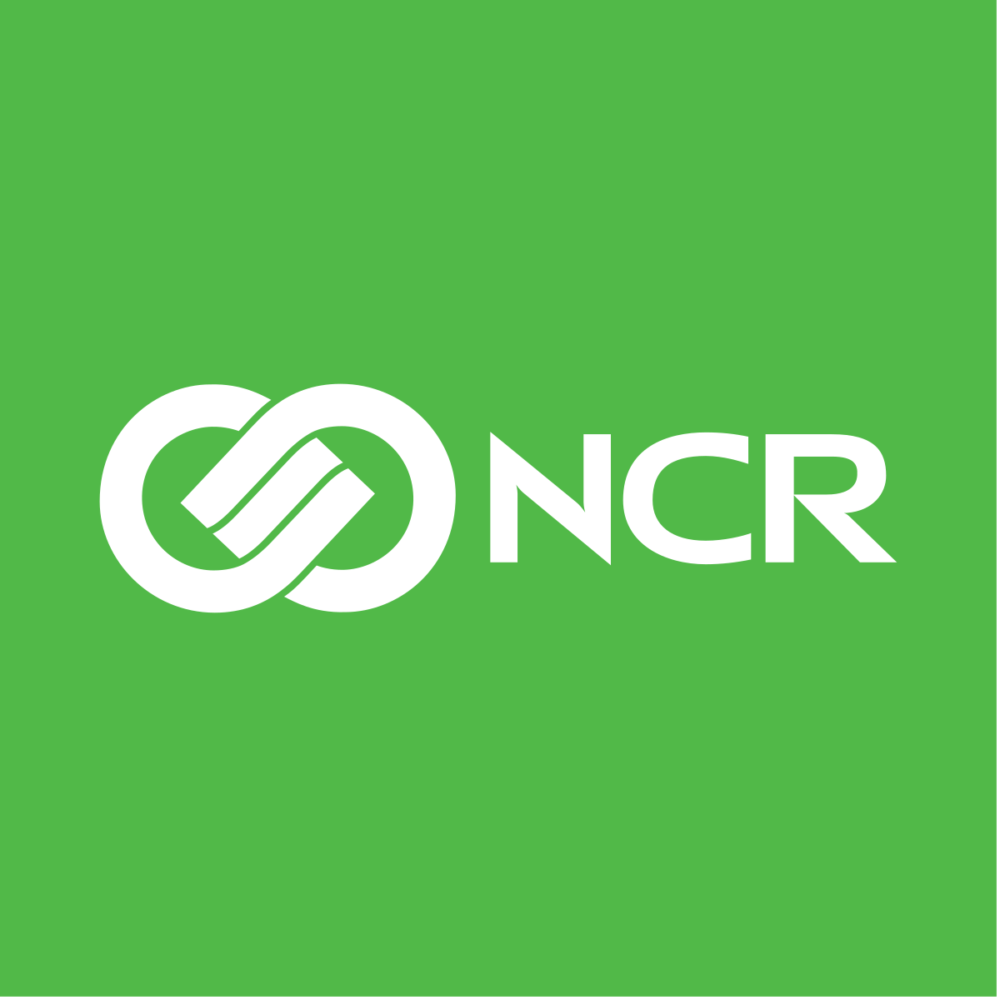

Work Terms 3 & 4
NCR Corporation
>NCR Corporation is a multinational company specializing in the creation of all manner of products for use in financial services - from ATMs, to cheque processing machines, to barcode scanners, to the software used in these devices.
Job Description
I worked as a frontend software engineer at NCR, working on their in development teller software for banks. In my role, I participated in a fast-paced environment creating new components and fixing bugs for the system within a small team. I worked remotely this term.
Goals at the NCR
| Goal | New or Enhanced Concepts and Tools Worked With | Outcome |
|---|---|---|
| Creating a better understanding of React and its systems. | While I'd worked with React in the past, my time at NCR was my first experience seeing these tools being used to their fullest. In addition to using Hooks for the first time, I became aquainted with better formatting and how to create cleaner code. | My experience at NCR was illuminating in creating components and writing code in React. I have learned a number of new techniques, like the afformentioned Hooks, but most importantly I took away the lesson that even in a professional workplace environment, there is constantly learning going on as coding languages continue to evolve. |
| Get better at reading code not written by myself to become a better reviewer. | While I've reviewed code in an academic setting in the past, my previous co-op didn't involve very much reviewing of code of my teammates. This time around, I was expected to review code on our company repository on Github. | I became significantly more adept at reviewing code throughout my time at NCR. At the start of the term, I would rarely review or approve Pull Requests submitted by my teammates - by the end, I was constantly looking at changes made, analyzing what effects they might have on the codebase, and even flagged some issues I identified on more than one occasion. I'm very happy with how far I've gotten at reviewing code in these short few months, and I look forward to applying these skills in the future. |
| Learn to analyze incoming work for any potential red flags and confer with my team to make sure they get solved early | During my previous co-op, and early into this one, I had issues where I would recieve a story I thought would be simple, start working on it at a low level in implementation, but then realize that the story was much more complicated than I had set aside time for, leading to undelivered story points and occasionally having to retool stories. I resolved to take time durign this term to look at my stories at a high level immediately, identify any potential issues before they became problems, and bring them up. | My strategy was a fantastic success. Not only did I not have any issues meeting deadlines during this term, I also idenfitied multiple problems in existing stories to have them put back into a spike before anyone wasted time attempting to implement them. I would say coming out of this term that this was the accomplishment I feel best about, as it demonstrated my ability to think critically and look ahead, which I appreciated having the ability to do at NCR. |
Conclusions
My work terms at NCR were fantastic. I gained invaluable knowledge on the inner workings of a prestigous company with a focus on software development, met some incredible people, and overall learned a lot about React, the software development lifecycle, and team collaboration. As I go forward in life unto other ventures, I'll always remember the valuable lessons I learned at NCR and keep them close.